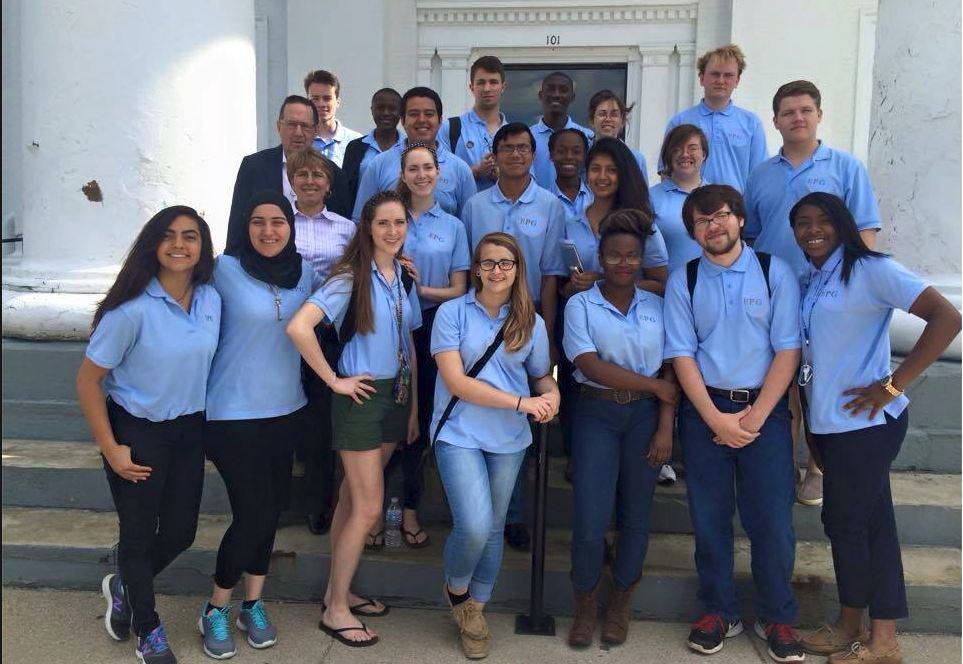
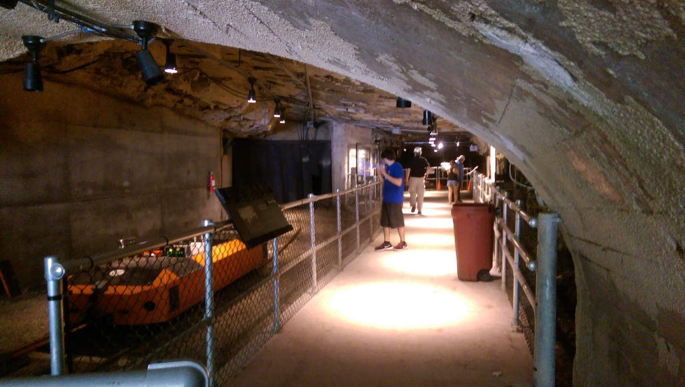
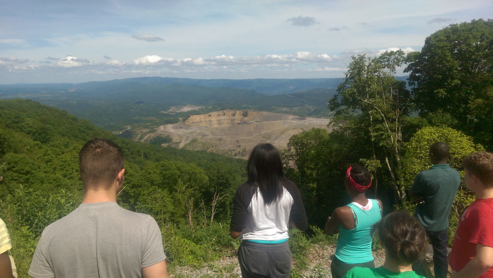
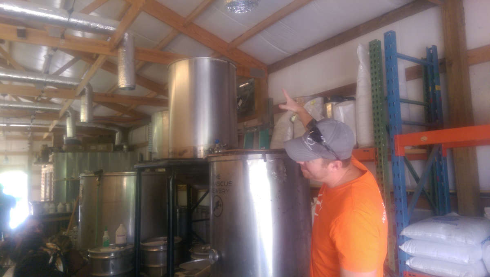
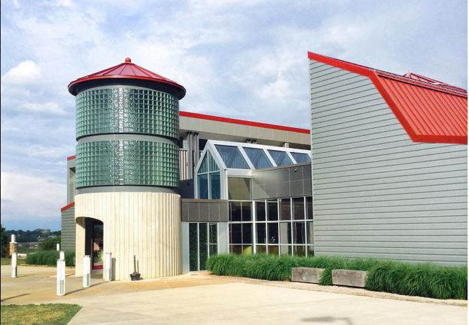
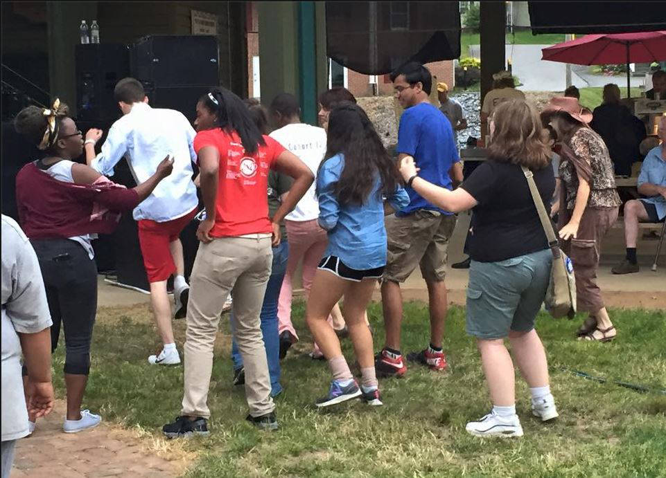
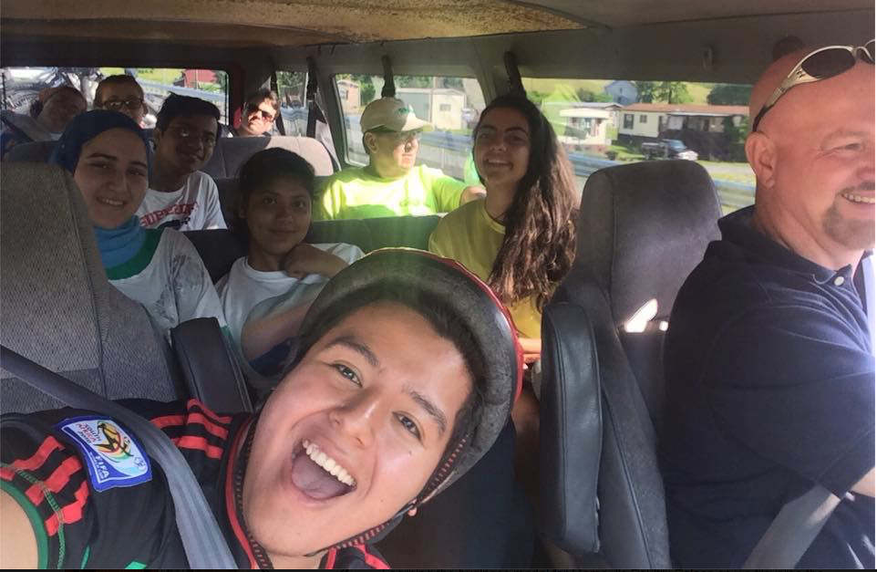
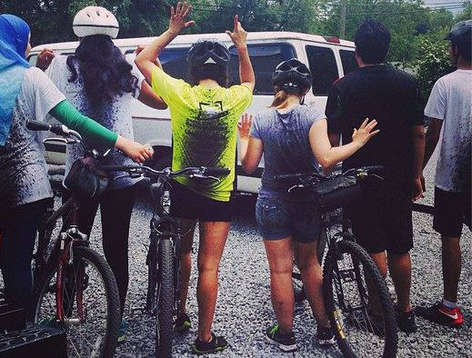

Day 1
We did not have class Monday because it was Memorial Day.
Day 2
We began the day by heading to the Madison County Fiscal Court House in Richmond, KY to give the same presentation that we gave to the merchants of Berea last Thursday. This time our “ask” was to get the County Judge to sign a proposal that would constitute the next step for Berea to become a trail town. David Newswanger and Dustin Watts gave the Presentation this time and after they finished and questions were answered by the Berea trail town committee members, the county judge asked to sign the paper right away.
 The group outside the Fiscal Court House in Richmond, KYDr. Hackbert was impressed and wanted to treat us to lunch. It was only about 10AM so while we waited for the local restaurants to open for business, we visited “Mike’s Bike and Hike”, a local biking, hiking and camping outfitter shop. There we met the owner, Mike, who told us his story. Mike was looking for a bike innertube for his bike and was complaining to his wife about having to drive all the way to Lexington to get the specific innertube that he needed. His wife suggested that he open a bike shop in Richmond and he followed through. His timing could not have been better. He opened his shop right as the recession of 2007-2008 was setting in and gas prices were soaring. During that first year he sold more bikes than he could keep in stock and was able to make his business profitable within a few years. Mike then opened another bike shop in another location.
Mike explained how he has come across a major problem in his business in recent years. He says that his customers see Mike as a brand. They shop at his shops because of him. They value his expertise and opinion more than they value the store or his employees’ opinions. Customers will call ahead asking which store location Mike is working in today and they will drive to that storefront no matter the distance. This is a problem because it means that if Mike is not physically present in the store, he will lose business. His business has become dependant on him making it difficult for it to be self sustaining. Dr. Hackbert used Mike’s situation to explain the difference and importance of working on a business instead of working in the business as an entrepreneur.
We had lunch at the Babylon Cafe in Richmond and visited the “Battle of Richmond” civil war museum on or way back to Berea.
Day 3
Wednesday we began our journey to Abingdon, VA to see what a town that has been sustaining itself entirely on tourist activity offers its tourists and how we could bring aspects of this town to Berea. We hit the road at 8AM and stopped soon after in London, KY to grab coffee at Starbucks. Our next stop was in Benham, KY to visit the Kentucky Coal Mining Museum.
“This museum is equal parts gallery and antique display. While information boards are plentiful, the real knowledge and experience gained from the museum was through the dozens of accurate and authentic displays. There are themes and sets that really invite you to image a life in the early and mid 1900s."Immersion" is the word and what I believe is the aim and specialty of the museum. I walked away with more of an understanding of the mining culture and history of Kentucky than I could gain from reading a hundred books.” - My review of the Kentucky Mining Museum on Yelp The opening of "Portal 31"
After the museum, we went to “Portal 31” a mining portal opened in the early 1900’s and shut down in the 1960’s. We rode a tram deep into the mine where animatronic miners and graphical displays took us through the different eras of mining in Kentucky from the lone miner and his pickaxe to the continuous miner.
 View at the top of Black MountainAfter we were filled with knowledge and understanding of the history of coal mining in Kentucky it was time to fill our stomachs. We stopped in Cumberland, KY at Charlotte's Hoagie Shop for a wholesome lunch before driving the rest of the way to Abingdon, VA. We avoided the interstate at Dr. Hackbert’s command so we could witness the countryside of Eastern Kentucky and Virginia. As part of this path we had to climb Black Mountain, the highest mountain in Kentucky. Clara, our team’s other driver, took us up mountain on the narrow and winding roads. At the top of the mountain after taking pictures, we switched and I took us down the mountain in low gear.
We arrived in Abingdon and unloaded at the Alpine Motel around dinner time. Once everyone arrived and unpacked, we went to 128 Pecan, a fancy bistro just off Main Street Abingdon. After dinner we returned to the motel to crash after a long day of travel.
Day 4
Today we focused on hearing the stories from local entrepreneurs in Abingdon and Damascus. We started off by visiting the bike rental shop that we will be using on Friday to bike a 17 mile portion of the Virginia Creeper Trail. The owner of the shop quit his job as an electrician to open this storefront and eventually expanded to a second location.
We then traveled to Damascus, VA to visit the Damascus Brewery, founded and run by Adam. Adam has a degree in Biology and worked for many years in a research lab doing DNA sequencing and genetic research. He was laid off a few years ago as his company went public. He had developed a passion for brewing in college and has been home brewing his own ales ever since. He made his own vats and equipment, saving lots of money on startup. He currently classifies as a nanobrewery because he can only output 50 gallons at a time. He is about to upgrade to a microbrewery, producing a few hundred gallons at a time. Adam took us through the process of brewing and revealed the chemistry behind the brew and the steps that he and his crew take to make the different flavors they offer.
 Adam showing us one of his brewing vats.One piece of information that we found interesting was the local economic impact that the brewery has had on Damascus. Adam purchases several tons of wheats and hops from local farmers every year and local restaurants and pubs keep his beer on tap allowing for a totally local economy surrounding the beer from the fields to the tap.
For lunch we went to a recently opened restaurant and bar called “Bobo McFarland’s”. After lunch we met with the owner of Bobo’s and heard his story. As a young adult he worked for years in a high class restaurant. Feeling that he had obtained the skills needed to work at a five star gourmet restaurant in Las Vegas. He packed his bags and headed out to Vegas stopping only for gas to get to an interview for a chef’s job. He walked in the door and sat down and the first question that he was asked was, “what formal education have you had?”. He had not attended any kind of culinary school and was told to leave the room and that they were only hiring those with official degrees. He quickly got his degree completing 4 years of classes and coursework in 18 months! He eventually found that he wanted to bring the 5 star restaurant experience to small towns like Damascus. He opened Bobo McFarland’s a few months ago in hopes of getting his alcohol distribution license in time for “The Damascus Trail Days Festival” that passed just a few weeks ago. He succeeded in getting his license in time and was still painting the walls of the restaurant as customers began piling in.
We also heard from another serial entrepreneur who owns many local businesses in Damascus including MoJo’s Coffee. His story was one of repeat entrepreneurship. He always is looking for a new business opportunity and jumps on every opportunity he gets.
 Heartwood Artisan CenterAfter hearing from all these local entrepreneurs we had a makeshift lecture in the lawn in front of the Alpine Motel. We discussed our learnings from the day and plans for the remainder of the day. We decided on visiting and having lunch at the Heartwood Artisan Center for live Bluegrass music and local artisan crafts then heading to “Thursday Jams” at the Abingdon Farmers Market. The Heartwood was an amazing architectural building stuffed with local culture offering everything from local wines, coffee beans, and soaps to hand blown glass figurines, brooms, and jewelry. The food at the Heartwood was amazing and the accompanying Bluegrass music was a nice touch.
The real fun began at the Farmers Market at “Thursday Jams”. The group performing used authentic Appalachian string instruments and drums to produce upbeat cultural tunes drawing from Arabic, Latin, and African musical roots. Needless to say the tunes got everyone in our group on our feet and it's safe to say that the Berea EPG Cohort 12 stole the show. The next day we had citizens from the town approach us asking, “were you one of the ones dancing yesterday?”.
 Dancing at "Thursday Jams"Dr. Hackbert was impressed with our unexpected dancing skills and treated us to Dairy Queen before returning to the motel where the entire gang, hopped up on ice cream and dancing fever, decided to all hang out in my hotel room with my roommate, David. It wasn't long until one of the girls in our cohort from Lebanon broke out authentic Lebanese hair plucking threads and began giving everyone a free eyebrow plucking. Let’s just say there are no more unmanaged eyebrows in our cohort… After everyone cleared out of our room, we hit the hay to rest up for our 17 mile bike tomorrow.
Day 5
 On the bike shuttle to Damascus.We woke up early and drove to the bike rental shop where we were fitted to our bikes, loaded onto a van with bikes on a trailer in tow, and shuttled to Damascus so that we could bike straight back to Abingdon, a 17 mile trail length. I had planned on sticking with the group along the trail but I soon found that I was leaving them behind even while pacing myself. I decided to leave the group and just enjoy myself on the trail stopping at photo opportunities and to sit and take a break on a bench beside the river. I saw some storm clouds approaching from the right and made it a priority to get back to Abingdon in time to beat the storm. I was the first to return to the bike rental shop with a few hours to spare before we were expected to all meetup and leave for Berea.
I checked online for a local place to have lunch and decided on Zazzy’z, a coffee, sandwich, and dessert shop about a mile from the bike shop. I walked there and had a pleasant lunch where I was approached by a lady asking If I was one of the dancers from yesterday. I explained that we were in Abingdon researching local businesses and observing the effect that trails have on local communities. I bought a bag of locally roasted Kenyan coffee beans and took the walk back to the bike shop. As I arrived at the bike shop so did the leading others from their biking excursion. Drenched in water and backs covered in coal mud flung up from their tires, they all instantly wondered why I wasn’t wet as well. I explained that I avoided the storm and spent my extra time wandering the streets of the town. As the others came wandering in we heard of one group who found a couple walking the trail who led them to their house just off the trail. The couple explained that they have an organic chicken farm and sell eggs in town. They have 75 chickens all of whom have names. They gave the group a dozen eggs and some all natural organic recipes to share.
 The ones who got rained on.Once everyone convened and cleaned up, we hit the road for the 4 hour drive back to Berea, stopping only for gas and bathroom breaks. Exhausted from traveling and all the fun we had this week, I have been resting up all weekend and falling behind on the online lessons we are expected to do. Hopefully I’ll get a reprieve as it seems many of the others are in a similar situation. This week truly felt like a vacation more than work but looking back I can see that I’ve learned a lot and this learning will likely be crucial to our work in the future.